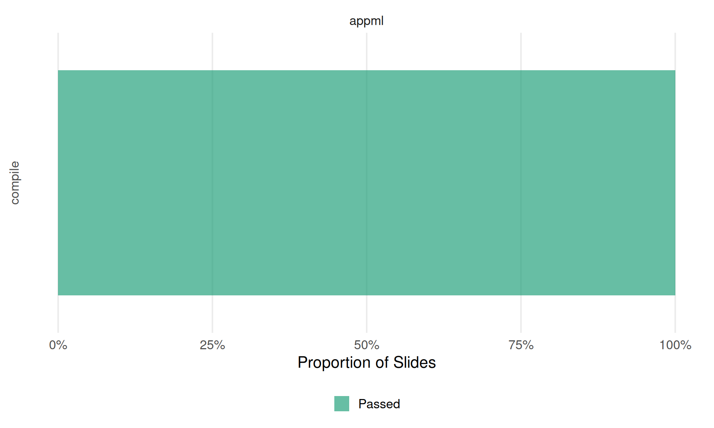

This document tabulates the state of the slides in
lecture_*/slides/<chapter>/ based on
lecture_*/slides-pdf/Displaying the latest commits of the lecture service repository and each of the currently included lectures (for debugging and race condition mitigation (kind of)).
| Branch | Last Commit | By | Message |
|---|---|---|---|
| main | 2026-03-17 14:10:19 | GitHub | Audit shold also track titlemeta (#27) |
| Lecture | Branch | Last Commit | By | Message |
|---|---|---|---|---|
| lecture_appml | main | 2026-04-06 11:57:47 | GitHub | Merge pull request #3 from HaykTarkhanyan/main |
If you’re missing a lecture here after rendering this site
interactively, you might have to add them to the
included_lectures files or ensure they are downloaded
correctly.

lecture_advml/slides/gaussian-processes/slides-gp-bayes-lm.tex
\___________/ \________________/ \________________/
lecture chapter <slide-name>
lecture_advml/slides-pdf/slides-gp-bayes-lm.pdf
\___________________/
pdf_static / "Reference PDF"Tables are organized by lecture (first level) and lecture chapters
corresponding to folders in slides/<chapter> (second
level), with a table per chapter. chapters ignore certain folders like
attic and all.
<slide-name> with a
link to the compiled .tex file (if it compiles).latexmk -pdf. This can depend on the
availability of specific LaTeX dependencies, but assuming they are not
the issue, this usually indicates syntax issues or things like
\includegraphics calls using relative paths that work on
Overleaf but not locally.<slide-name>.tex against
slides-pdf/<slide-name>.pdf using
diff-pdf-visually:
diff-pdf (at a lower resolution
than the originals).12 chapters with a total of 35 slides
| Slide | Compiles? | Note |
|---|---|---|
| slides01-basics | ✅ | |
| slides02-learning | ✅ | |
| slides03-resampling | ✅ | |
| slides04-benchmarking | ✅ |
| Slide | Compiles? | Note |
|---|---|---|
| slides01-lifecycle | ✅ | |
| slides02-best-practices | ✅ |
| Slide | Compiles? | Note |
|---|---|---|
| slides01-tuning | ✅ | |
| slides02-untouched-data | ✅ | |
| slides03-mlr3tuning | ✅ | |
| slides04-mlr3tuning-advanced | ✅ |
| Slide | Compiles? | Note |
|---|---|---|
| slides01-feature-preproc-categ-encod | ✅ | |
| slides02-feature-preproc-feat-transform | ✅ | |
| slides03-feature-preproc-mlr3pipelines | ✅ | |
| slides04-feature-preproc-mlr3pipelines-linear | ✅ |
| Slide | Compiles? | Note |
|---|---|---|
| slides-imputation-model-based | ✅ | |
| slides-imputation-simple | ✅ |
| Slide | Compiles? | Note |
|---|---|---|
| slides04-perf-eval-01-calibration-discrimination | ✅ | |
| slides04-perf-eval-02-calibrating-probabilities | ✅ |
| Slide | Compiles? | Note |
|---|---|---|
| slides01-imbalanced | ✅ | |
| slides02-cost-sensitive | ✅ | |
| slides03-sampling | ✅ |
| Slide | Compiles? | Note |
|---|---|---|
| slides01-ensembles-averaging | ✅ | |
| slides02-ensembles-stacking | ✅ |
| Slide | Compiles? | Note |
|---|---|---|
| slides-batchtools | ✅ | |
| slides-mlr3oml | ✅ | |
| slides-openml | ✅ |
| Slide | Compiles? | Note |
|---|---|---|
| slides04-perf-eval-04-hypothesis | ✅ | |
| slides04-perf-eval-05-practical | ✅ |
| Slide | Compiles? | Note |
|---|---|---|
| slides-timeseries | ✅ |
After compilation, .fls recorder files capture every
file the TeX engine opened. This allows robust detection of which
figures each slide actually uses, including dynamically constructed
paths (e.g. \foreach loops) that regex-based parsing
misses.
Figures in figure/ or figure_man/ that are
not referenced by any slide are orphaned. Figures
referenced by slides but missing from disk are
missing.
Each lecture chapter may have two figure directories:
figure/ — generated figures, typically
produced by R scripts in rsrc/figure_man/ — manually created or
externally sourced figures, not generated by scriptsFigures are counted separately per figure/ and
figure_man/ folders:
attic
subfolder which might need to be cleaned out| Lecture | Chapter | Total | Orphaned | Missing | Attic | Total | Orphaned | Missing |
|---|---|---|---|---|---|---|---|---|
| lecture_appml | 01_intro | 0 | 0 | 0 | 0 | 2 | 2 | 0 |
| lecture_appml | 03_lifecycle | 0 | 0 | 0 | 0 | 20 | 20 | 0 |
| lecture_appml | 04_tuning | 0 | 0 | 0 | 0 | 5 | 5 | 0 |
| lecture_appml | 05_feature-preproc | 13 | 13 | 0 | 0 | 3 | 3 | 0 |
| lecture_appml | 06_adv-feature-preproc-selection | 1 | 1 | 0 | 0 | 2 | 2 | 0 |
| lecture_appml | 07_imputation | 6 | 1 | 0 | 0 | 9 | 2 | 0 |
| lecture_appml | 08_perf_calibration | 28 | 28 | 0 | 0 | 26 | 26 | 0 |
| lecture_appml | 09_imbalancy_corr | 25 | 25 | 0 | 0 | 18 | 18 | 0 |
| lecture_appml | 10_ensembles-stacking | 18 | 18 | 0 | 0 | 2 | 2 | 0 |
| lecture_appml | 11_parallelization | 5 | 0 | 0 | 0 | 0 | 0 | 0 |
| lecture_appml | 12_perf_benchmark_tests | 25 | 25 | 0 | 0 | 0 | 0 | 0 |
| lecture_appml | 12_time_series | 0 | 0 | 0 | 0 | 1 | 0 | 0 |
2 orphaned figure(s) in
figure_man/:
ConfusionMatrix.pngmlr3_logo.png20 orphaned figure(s) in
figure_man/:
blocking.jpgBusinessUnderstandingOverview.pngconfounder.pngDataSheet.pngDataSources.pngDSLifecycle1.pngDSLifecycle2.pngMLTasks.pngModel Governace.pngmodelcard.pngModelling1.pngModelling2.pngModelling3.pngModelling4.pngModelling5.pngModelling6.pngModelling7.pngpipeline.pngspam_airport.jpgValidation.png5 orphaned figure(s) in
figure_man/:
biased_selection.pngecdf_all.pdfempty.pngfigure_1.pdfnormalized_test.pdf13 orphaned figure(s) in figure/:
01_target_log_distribution.pdf01_target_original_distribution.pdf01_transformation_comparison_algorithms.png01_transformation_comparison_all_algorithms.png02_feature_transformation_knn.pngames_target_distrib.pdfcateg_dummy_encoding_comparison.pngcategorical_onehot_table.pdfcategorical_original_table.pdffoundation_counts_table.pdffoundation_encoding_table.pdfintro_fe_importance.pngwood_foundation_examples.pdf3 orphaned figure(s) in
figure_man/:
empty.pngpipe_action.pngREADME.md1 orphaned figure(s) in figure/:
liu-aistats23a.png2 orphaned figure(s) in
figure_man/:
empty.pngpipe_action.png1 orphaned figure(s) in figure/:
empty.png2 orphaned figure(s) in
figure_man/:
fe_imputation_models.pdfREADME.md28 orphaned figure(s) in figure/:
1-attributions.png1-local-global.png2algos_1dataset.png2algos_multipledatasets.pngbenchmarkcolplot.pngbenchmarkrankplot.pngcalibration_large_vs_small.pdfcalibration_methods1.pdfcalibration_methods2.pdfcalibration_methods3.pdfcalibration_plot.pngcalibrationplot.pngclassification_measures.pngcrit_diff_plot.pngdtrain_dtest_resampling.pngempty.pngfig-benchmark-box-1.pnggaussian_differences.pngmcnemar_1.pngmetrics_task_overview.pngmultiplalgos_multipledatasets.pngnormal_densities.pngomnibustesting.pngpic-pava.pngpic-pava2.pngreliability_diagram.pngtests_overview.pngtests.pdf26 orphaned figure(s) in
figure_man/:
calibdiscr1.pdfcalibdiscr2.pdfcalibdiscr3.pdfcalibplot-2.pngcalibplot-3.pngcalibplot-4.pngcalibplot.pngcalibplot2.pngcalibration_large_vs_small.pdfcalibration.pdfcalibration.pngcalibration2.pngCalibrationCVFold.pngCalibrationCVPooled.pngCalibWorkflow1.pngCalibWorkflow2.pngCalibWorkflow3.pngConfusionMatrix.pngiso-reg.pngisotonic-reg.pnglung-cancer.pngnested_resampling.pngOverAndUnderConfidence.pngoverconfidence.pngplatts-scaling.pngunderconfidence.png25 orphaned figure(s) in figure/:
bac_plot.pdfclassification-vs-anomaly.pngempty.pngf1_score_plot.pdfg_score_plot.pdfimbalanced_data_plot_title.pdfoversampling.pngSMOTE.pngthreshold_adjusting.pngthreshold_tuning11.pngthreshold_tuning12.pngthreshold_tuning21.pngthreshold_tuning22.pngtomek_link_plot.pngunder_oversampling.pngundersampling.pngunnamed-chunk-10-1.pdfunnamed-chunk-2-1.pdfunnamed-chunk-3-1.pdfunnamed-chunk-4-1.pdfunnamed-chunk-5-1.pdfunnamed-chunk-6-1.pdfunnamed-chunk-7-1.pdfunnamed-chunk-8-1.pdfunnamed-chunk-9-1.pdf18 orphaned figure(s) in
figure_man/:
benchmark_plots.pdfcombined_data_plots.jpgcoordinate_system.jpegrelabeling_viz.pdfsmote_viz_1.pdfsmote_viz_10.pdfsmote_viz_11.pdfsmote_viz_12.pdfsmote_viz_2.pdfsmote_viz_3.pdfsmote_viz_4.pdfsmote_viz_5.pdfsmote_viz_6.pdfsmote_viz_7.pdfsmote_viz_8.pdfsmote_viz_9.pdfsmoted_iris_data_ggplot.pdfthreshold_plots.pdf18 orphaned figure(s) in figure/:
AG.pngALMB.pngbagging_better.pngbagging.pngboot.pngensemble_smiley.pngensembles_hs.pngEnsembling.pdfensembling.pngRandom_Forest.pngrf_majvot_averaging.pngstacking_better.pngstacking_cv_better.pngstacking_cv.pngstacking.pngvoting_better.pngvoting.pngWeighted_Model_Averaging.pdf2 orphaned figure(s) in
figure_man/:
bagging_variance_bias_100_trees.pngbagging_variance_bias_tree.png25 orphaned figure(s) in figure/:
1-attributions.png1-local-global.png2algos_1dataset.png2algos_multipledatasets.pngbenchmarkcolplot.pngbenchmarkrankplot.pngcalibration_large_vs_small.pdfcalibration_plot.pngcalibrationplot.pngclassification_measures.pngcrit_diff_plot.pngdtrain_dtest_resampling.pngempty.pngfig-benchmark-box-1.pnggaussian_differences.pngmcnemar_1.pngmetrics_task_overview.pngmultiplalgos_multipledatasets.pngnormal_densities.pngomnibustesting.pngpic-pava.pngpic-pava2.pngreliability_diagram.pngtests_overview.pngtests.pdf